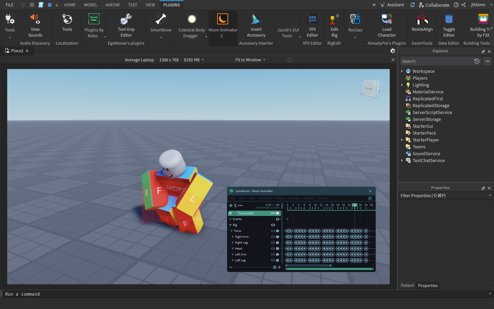
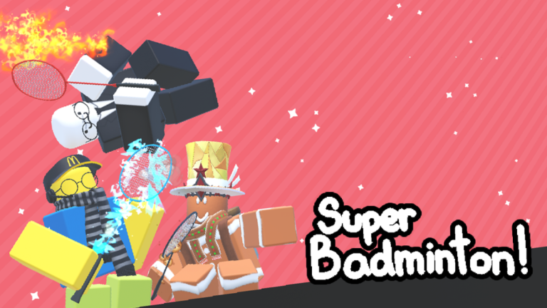

Builder
Description
Builds and creates environment for the game, such as for gameplay, cutscenes, etc. When you are tasked to create a build, you are most likely tasked to build with a referenced given by the comissioner.

Recommended Skills
These following are skills that are recommended, some required to work with this role.
Building Skills: Not hard to start with but mastering it is extremely important to do well in this role. (Required)
3D Modelling: You can create decent builds with good amount of experience, but this skill is very much recommended. (Recommended)
Difficulty to Learn: Medium
Role Difficulty: Medium
Modeller
Description
Usually works with creating 3D models for tools, such as equippable weapons or collectable items, vehicles or houses, etc. Would be a great sub-role to take on as a Builder. Blender is a great free open-sourced software to start with.

Recommended Skills
These following are skills that are recommended, some required to work with this role.
3D Modelling: Usually an easy role, can get harder depending on the comissioned model. (Required)
Difficulty to Learn: Hard
Role Difficulty: Varies
Animator
Description
Crucial for a lot of games, most noticably in fighting themed games. Animatiors usually works on character animations for interactions or actions, but also may be tasked to work on animatable objects or even cutscenes. Animators animates and imports from Blender professionally, but the default animation kit or Studio plugins can work as alternatives as well.

Recommended Skills
These following are skills that are recommended, some required to work with this role.
Working with Blender (Importing & Exporting, Rigging): Not required but vital to learn to get professional at this role. (Recommended)
Animation (With your animation tool of choice): What's the point of being an animator that can't animate? (Required)
Difficulty to Learn: Medium/Hard
Role Difficulty: Medium
Scripter
Description
Creates scripts for the game to run as intended. Is very important for games, unless you want to create a game that is non-interactive and only filled with models and builds. I mainly do this role, so if you want to learn I've made a guide which you can learn how to script from.
Note: Scripters are different than Programmers. Scripting and programming is different things, so if you want to also be a programmer you will have to look somewhere else since there is no guide for that here.

Recommended Skills
These following are skills that are recommended, some required to work with this role.
Scripting in Luau (Scripting Language): This is the computer language (Modified version of Lua) that Roblox runs on. (Required)
Difficulty to Learn: Medium/Hard
Role Difficulty: Medium/Hard
VFX Designer
Description
Creates visual effects for the game. Could be tasked with creating particle assets using images/flipbooks, or even 3D meshes.

Recommended Skills
These following are skills that are recommended, some required to work with this role.
Designing & Creativity: Designing how the particle results in visually. (Recommended)
2D Particle Sketching: Sketch & draw images or flipbooks for creating particles with. (Recommended)
3D Modelling: A great skill to learn and use for mesh effects creation. (Recommended)
Difficulty to Learn: Easy/Medium
Role Difficulty: Medium
SFX Designer
Description
Sound design is a great addition for games to become more lively. This is more as a sub-role since you can just find pre-made sound effects and add into your game. Unless you're intimidating the sound through other objects with a microphone setup, this role isn't that hard to work with.

Difficulty to Learn: Easy
Role Difficulty: Easy
UI Designer
Description
Creates user interface (UI) for the game's interactive factor. Having a bit of organization and scripting skills can help the scripters write their code easier.
Recommended Skills
These following are skills that are recommended, some required to work with this role.
Designing & Creativity: Designing the layout of the user interface. (Recommended)
Organization Skills: Organizing your interface layout can help you and the scripters have an easier time. (Recommended)
Scripting Skills: Not really necessary but can be useful to know how to organize without giving the scripters a hard time. (Recommended)
Difficulty to Learn: Easy/Medium
Role Difficulty: Easy/Medium
2D/3D Graphic Designer
Description
This role focuse on the artistic visuals of the game, such as game art, item thumbnails, badge/game icons, etc. The result would be a 3D rendering or a digitally drawn/designed visual component.

Recommended Skills
These following are skills that are recommended, some required to work with this role.
Designing & Creativity: No one would want an unattractive looking game thumbnail, would they? (Recommended)
Difficulty to Learn: Medium/Hard
Role Difficulty: Easy/Medium
Music Composer
Description
If you're planning to make a big project (which you shouldn't, if you're just starting) you would want original soundtracks for your game. This role is responsible for creating these music tracks. This could be a very useful role outside of Roblox development, such as publishing your own music or working with other more advanced game development engines.

Recommended Skills
These following are skills that are recommended, some required to work with this role.
Music Composition: I mean, making music without knowing how to compose? Come on. (Required)
Designing & Creativity: Great creativity will surely help out in composing some unique soundtracks. (Recommended)
Difficulty to Learn: Hard
Role Difficulty: Medium